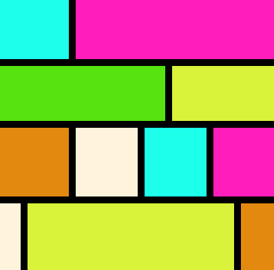

MAIN
- The Artpiece is a "Mondrian Style" artpiece that is created using colored div boxes. 
- The Popart was created using Adobe Photoshop from actual photos.
- The Belize travel newsletter was created to showcase the use of flex containers.
- The Ansel Adams Webpage showcases the work of the late photographer.


ASIDE
Hello my name is Jack Lonergan and I am a current resident of Greenville, SC. I have been in the business for 38x10^-3 years and have created numerous webpages.